▲ 해 질 녘 고군산군도. 섬 사이를 다리로 이어 차로 이동할 수 있다 ⓒ 한국관광공사 · 공공누리 제1유형
"선유도까지 차로 들어갈 수 있다는데, 주차는 어디에 하고 몇 시간이면 다 볼 수 있을까?" 2026년 10월 17일 기준으로 군산시 문화관광 공식 안내와 한국관광공사 관광정보를 확인해 신시도, 무녀도, 선유도, 장자도를 자차로 도는 순서를 정리했다. 방조제에서 장자도까지 이어지는 연결도로는 총 8.77km이고, 선유2구 주차장은 331대, 장자도 주차장은 145대(유료, 한국관광공사 안내상 최초 1시간 무료)로 안내돼 있다. 유람선은 어른 22,000원·1시간 10분이다. 군산시 교통안내 바로가기 군산시 유람선 안내 바로가기
💡 먼저 결론
네 섬은 다리로 이어져 있어 차 한 대로 신시도에서 장자도까지 들어갈 수 있다. 다만 군산시 공식 코스 안내도 "선유대교 앞 주차장이 협소해 아침 일찍 주차하지 않으면 주차 불가"라고 적을 만큼 주차가 병목이다. 선유도 공영주차장은 한국관광공사 최신 안내 기준 최초 1시간이 무료이고 이후 30분당 1,500원이다. 군산시 공식 페이지에는 요금표가 없어 3장에 출처별로 비교했으니, 현장 안내판을 최종 기준으로 삼아야 한다.
1. 한눈에 보기 — 숫자로 정리한 고군산군도 자차 여행
고군산군도는 군산시 공식 안내에서 16개의 유인도와 47개의 무인도로 이뤄진 섬 무리다. 이 중 신시도·무녀도·선유도·장자도는 새만금방조제 끝에서 도로로 이어진다. 연결도로는 2016년 7월 새만금방조제에서 무녀도까지 4.39km가 먼저 열렸고, 2017년 12월 28일 장자도까지 전 구간이 이어졌다는 보도가 있다(아주경제 2017.12.27).
| 항목 | 내용 | 출처·비고 |
|---|---|---|
| 연결도로 | 새만금방조제~신시도~무녀도~선유도~장자도 8.77km, 교량 6개(신시해안교·고군산대교·신시교·무녀교·선유교·장자교) | 아주경제 2017.12.27 보도, 한국관광공사 관광정보(교량 명칭) |
| 주차장 | 선유2구 331대, 장자도 145대(유료, 최초 1시간 무료), 신시도 31대(무료) | 군산시 문화관광 교통안내, 한국관광공사(장자도 요금) |
| 유람선 | 어른 22,000원, 어린이 11,000원, 1시간 10분 | 군산시 문화관광 유람선 안내 |
| 장자교 스카이워크 | 268m, 연중무휴·상시 개방 | 군산시·한국관광공사 |
| 선유스카이SUN라인(짚라인) | 만 13세 이상 20,000원, 어린이 16,000원(개인 기준) | 한국관광공사 관광정보(2026.2.24 갱신 표기) |
| 입장료 | 선유도해수욕장·장자교 스카이워크·대장봉 모두 상시 개방, 연중무휴. 별도 입장료 안내는 확인되지 않음 | 한국관광공사 관광정보(군산시 안내에도 요금 없음) |
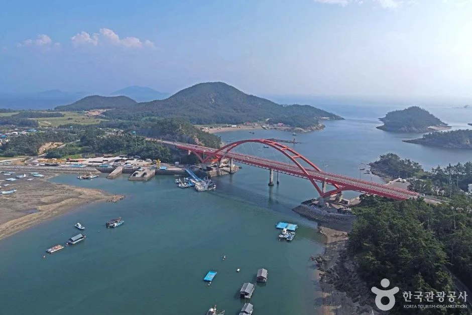
▲ 선유대교 일대를 내려다본 모습. 붉은 아치 다리가 섬 사이를 잇는다 (촬영 시기는 안내되지 않음) ⓒ 한국관광공사 · 공공누리 제3유형(변경금지)
2. 이동 동선 — 신시도에서 장자도까지, 섬마다 다리로 이어진다
새만금방조제를 따라 들어오면 신시도가 가장 먼저 나오고, 고군산대교를 건너 무녀도, 선유대교를 건너 선유도, 장자대교를 건너 장자도 순이다. 군산시 교통안내도 "신시도 새만금광장, 무녀도, 선유도, 장자도까지 자동차로 진입 가능"하다고 밝힌다. 되돌아 나올 때도 같은 길 한 갈래뿐이라 주말 오후에는 출차 정체가 길어질 수 있다.
한국관광공사 관광정보에 따르면 이 연결도로의 교량은 신시해안교·고군산대교·신시교·무녀교·선유교·장자교 6개다. 이 중 고군산대교는 신시도와 무녀도를 잇는 길이 400m의 외팔 현수교로 소개된다. 선유대교·장자대교 등 나머지 다리의 길이는 군산시·관리청 공식 자료에서 확인하지 못해 싣지 않았다.
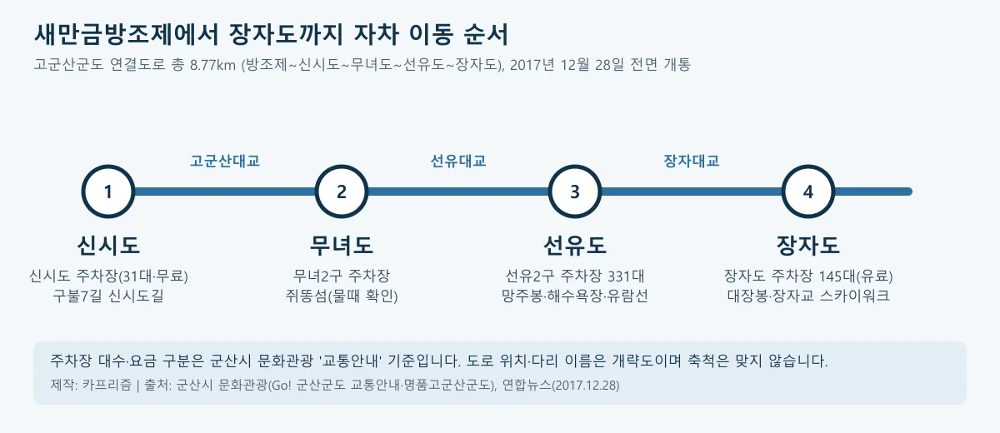
▲ 카프리즘이 군산시 공식 자료를 바탕으로 만든 이동 순서 도표(개략도) 카프리즘 제작
| 섬 | 이곳에서 하는 일 | 공식 안내에서 확인한 것 |
|---|---|---|
| 신시도 | 드라이브 첫 관문, 구불7길 걷기 | 구불7길 고군산길 12.3km(305분), 신시도 주차장 31대 무료 |
| 무녀도 | 쥐똥섬 물길, 일출 | 썰물 때 바닷길이 열려 섬까지 걸어갈 수 있음, 무녀2구 주차장 이용 |
| 선유도 | 해수욕장, 망주봉, 선유봉, 유람선, 짚라인 | 선유2구 주차장 331대, 유람선 선유2구 출항 |
| 장자도(대장도) | 대장봉, 장자할매바위, 장자교 스카이워크 | 장자도 주차장 145대 유료(한국관광공사: 최초 1시간 무료), 대장도는 차량 통행 통제, 장자도 관광안내소 063-465-5186 |
군산시가 제시한 당일 코스(약 8시간)는 선유대교 앞 주차장에서 시작해 연리지나무, 선유1구 데크길, 옥돌해변, 선유봉, 장자대교, 대장봉, 선유도해수욕장, 오룡묘, 남악산(대봉전망대), 몽돌해변을 돈 뒤 다시 주차장으로 돌아오는 순서다. 7시간짜리 코스는 무녀2구 주차장에서 쥐똥섬과 해안길을 지나 선유도해수욕장으로 이어진다. 자차라면 이 코스를 그대로 따르기보다 주차를 한 번만 하고 걸어서 도는 편이 덜 막힌다.
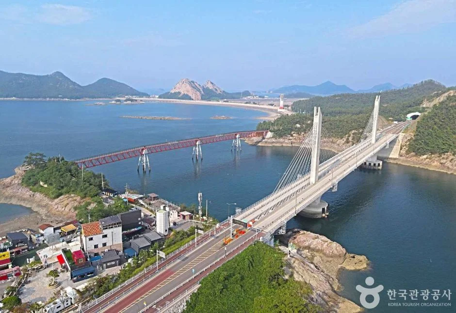
▲ 고군산군도의 사장교와 해안 마을. 섬 사이를 이은 다리가 한눈에 들어온다 ⓒ 한국관광공사 · 공공누리 제3유형(변경금지)
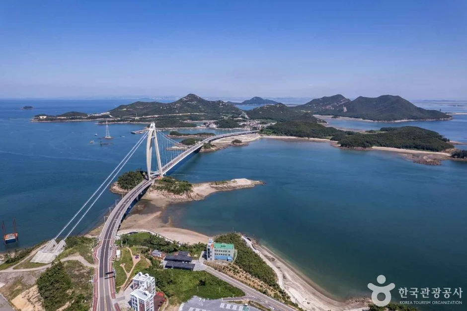
▲ 고군산대교. 신시도와 무녀도를 잇는 길이 400m의 외팔 현수교로 소개된다 (촬영 시기는 안내되지 않음) ⓒ 한국관광공사 · 공공누리 제1유형
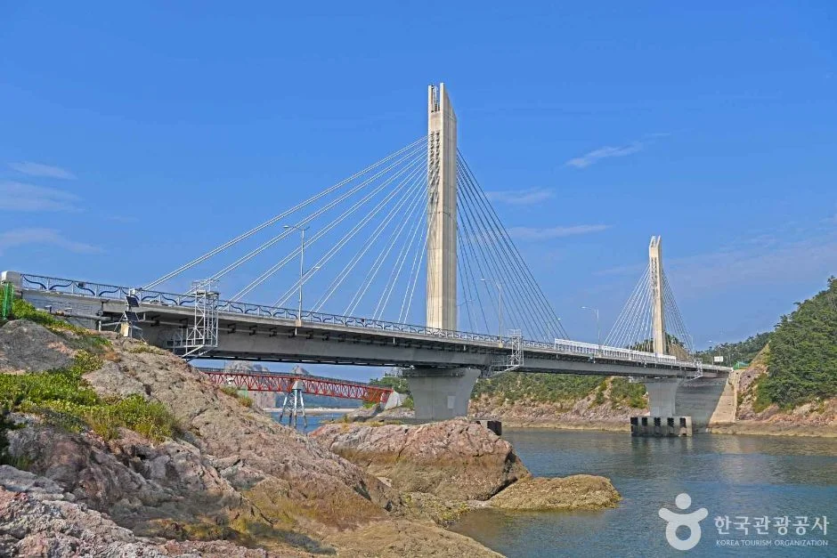
▲ 장자교 일대의 사장교. 한국관광공사 항목명은 '장자교(군산)'다 (촬영 시기는 안내되지 않음) ⓒ 한국관광공사 · 공공누리 제3유형(변경금지)
3. 주차 — 331대 선유2구 주차장, 최초 1시간 무료 안내가 가장 최신이다
군산시 공식 교통안내는 선유2구 주차장 331대(대형버스 11대 주차 가능), 장자도 주차장 145대(유료), 신시도 주차장 31대(무료)를 안내한다. 같은 페이지는 "주차장이 협소하니 참고하라"고 당부하지만 요금은 적지 않았다. 군산시 교통안내 바로가기
요금은 한국관광공사 관광정보가 가장 최근 값이다. 선유도해수욕장 항목(갱신일 2026.9.15 표기, 문의처 군산시청 교통항만수산국 063-454-2812)에는 선유도 공영주차장이 기본 1시간 무료, 이후 소형 30분당 1,500원·대형 30분당 2,500원 추가로 적혀 있다. 대장봉 항목(갱신일 2026.4.20 표기)에는 장자도 주차장이 최초 1시간 무료라고 나온다. 장자도의 1시간 이후 요금과 1일 최대액은 확인하지 못했다.
| 자료 | 요금·운영 내용 | 기준 시점 |
|---|---|---|
| 한국관광공사 관광정보(선유도해수욕장) | 선유도 공영주차장: 기본 1시간 무료, 이후 소형 30분당 1,500원, 대형 30분당 2,500원 추가 | 2026.9.15 갱신 표기 |
| 한국관광공사 관광정보(대장봉) | 장자도 주차장 이용, 최초 1시간 무료(이후 요금 미기재) | 2026.4.20 갱신 표기 |
| 선유스카이SUN라인 시설 안내(한국관광공사 레저 정보) | 시설 이용객 주차: 소형 60분 무료, 60~90분 1,000원, 이후 30분당 1,500원, 5시간 이상 1일 12,000원, 영수증 지참 시 2시간 무료 | 2026.2.24 갱신 표기 |
| 전북일보 보도(2021.5.24) | 오전 9시~오후 6시 유료, 최초 30분 1,000원 후 10분마다 300원, 1일 최대 10,000원, 상가 10,000원 이상 이용 시 2시간 면제 | 2021년 5월(과거 자료) |
| 군산시 문화관광 교통안내 | 선유2구 331대(요금 언급 없음), 장자도 145대 유료, 신시도 31대 무료 | 갱신일 표기 없음 |
2021년 보도의 요금 체계는 한국관광공사 최신 안내와 다르다. 군산시가 요금표를 직접 공시한 페이지는 찾지 못했으므로, 이 글은 가장 최근에 갱신된 한국관광공사 값을 기준으로 쓰되 시간대별 유료 운영 여부와 영수증 면제 조건은 입차 전 안내판이나 군산시청 교통항만수산국(063-454-2812)으로 확인하길 권한다.
2021년 보도는 주말·연휴에 출차하는 데만 30분 이상 걸렸다고 전했고, 출구와 정산 창구가 한 곳이라는 구조적 문제도 지적했다. 지금 같은 상황인지는 확인하지 못했지만, 일몰을 보고 바로 나오려는 차량이 몰리는 시간대는 피하는 편이 현실적이다.
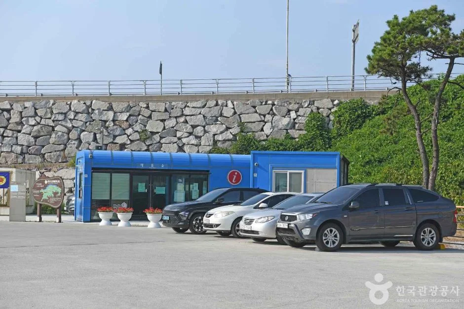
▲ 장자도 여객터미널 앞 공터. 장자도에서는 주차 후 걸어서 이동한다 (촬영 시기는 안내되지 않음) ⓒ 한국관광공사 · 공공누리 제3유형(변경금지)
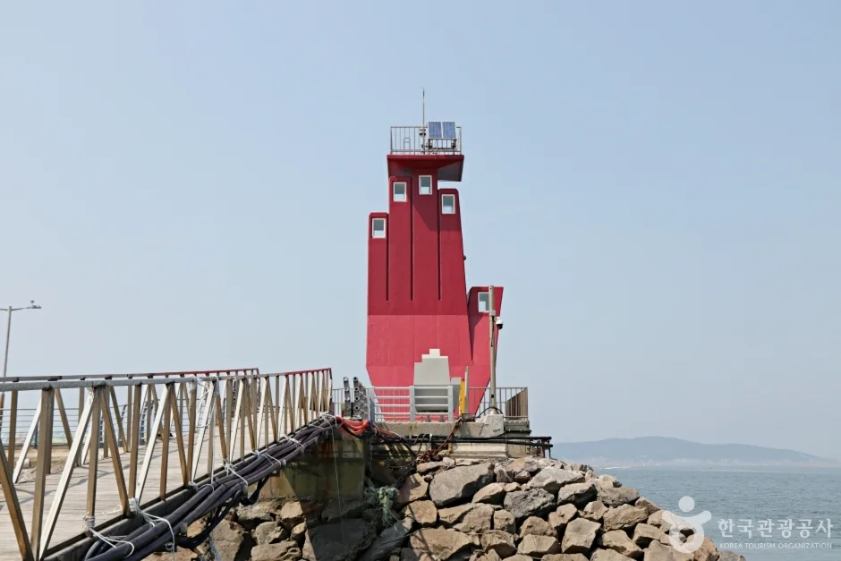
▲ 선유도항 방파제의 붉은 등대 ⓒ 한국관광공사 · 공공누리 제3유형(변경금지)
4. 주요 포인트 — 공식 안내로 확인된 곳만
군산시 공식 관광 안내에 나오는 포인트를 기준으로 골랐다. 거리·소요 시간이 공식 자료에 없는 곳은 수치를 적지 않았다. 군산시 명품 고군산군도 바로가기
| 포인트 | 공식 안내 요약 | 자차 여행자가 알아둘 점 |
|---|---|---|
| 망주봉 | 선유도 북쪽에 우뚝 솟은 두 개의 바위산, 해발 152m. 등반은 가능하나 절벽과 급경사 길이라 산행을 자제해 달라고 안내 | 멀리서 보는 풍경 위주로 계획 |
| 선유도해수욕장(명사십리) | 천연 해안 사구 해수욕장. 만조를 빼면 폭 50여m 모래벌판, 선유 팔경의 하나 | 주차는 선유도 공영주차장 이용 |
| 선유봉·삼도귀범 | 정상에서 선유 팔경의 삼도귀범을 볼 수 있음 | 당일 코스 중 선유대교 앞 주차장 출발 |
| 옥돌해변·해변 데크길(선유1구) | 모래 대신 고운 옥돌 자갈 해변. 주차 후 3분 걸으면 주상절리와 기암괴석 데크길 | 선유1구 주차장은 협소하다고 안내 |
| 장자교 스카이워크 | 1986년 완공한 길이 268m 기존 교량의 일부를 확장·바닥 교체해 만든 보행 시설, 야간 LED 경관조명 | 한국관광공사: 연중무휴·상시 개방. 차가 건너는 장자대교와는 별개 |
| 대장봉(대장도) | 대장도에 있는 봉우리. 구불길 나무계단을 10~20분 오르면 전망대가 나오고 360도 전망이 열린다(한국관광공사) | 대장도는 차량 통행이 통제돼 장자도 주차장에 세우고 걸어 들어가야 한다. 높이는 공식 자료에서 확인하지 못함 |
| 장자할매바위 | 대장도 서쪽 바위, 사랑을 이뤄준다는 전설 | 유람선 A·B코스에서도 지나감 |
| 쥐똥섬(무녀도) | 물때에 따라 바닷길이 열려 섬까지 걸어갈 수 있고 일출이 장관 | 물때 확인 필수 |
| 선유스카이SUN라인 | 선유도해수욕장 타워에서 솔섬 쪽으로 케이블에 매달려 내려오는 체험 | 만 13세 이상 20,000원·어린이 16,000원(개인), 평일 09:30~17:30(11:30~12:50 휴게)·주말 09:30~18:00, 문의 063-468-8602(한국관광공사 레저 정보, 2026.2.24 갱신 표기) |
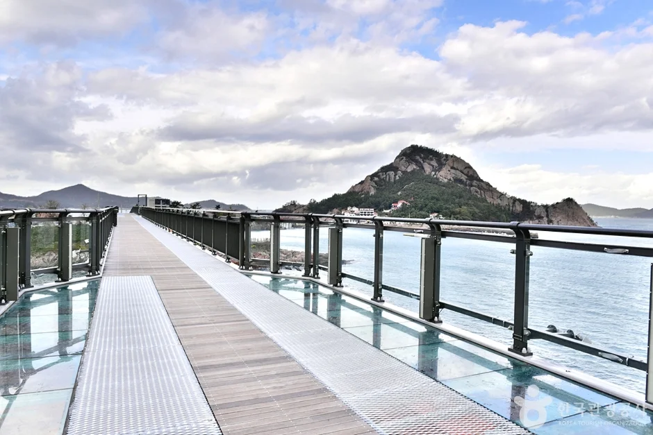
▲ 장자교 스카이워크. 길이 268m의 보행 다리다 ⓒ 한국관광공사 · 공공누리 제3유형(변경금지)
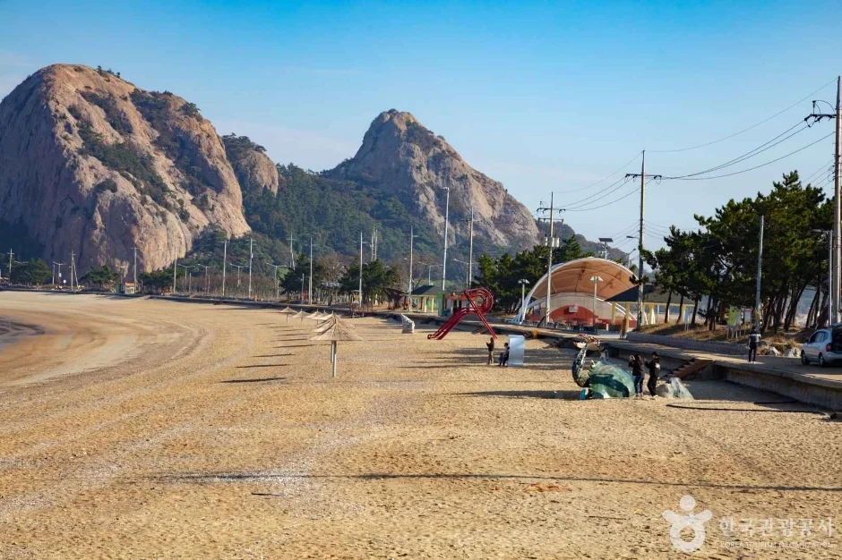
▲ 선유도해수욕장과 뒤로 솟은 망주봉 ⓒ 한국관광공사 · 공공누리 제3유형(변경금지)
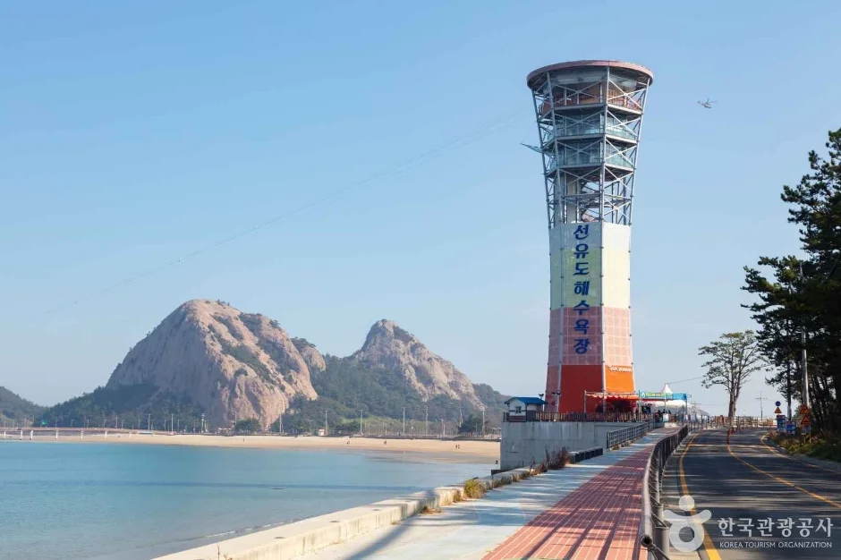
▲ 선유스카이SUN라인 타워와 해변 ⓒ 한국관광공사 · 공공누리 제3유형(변경금지)
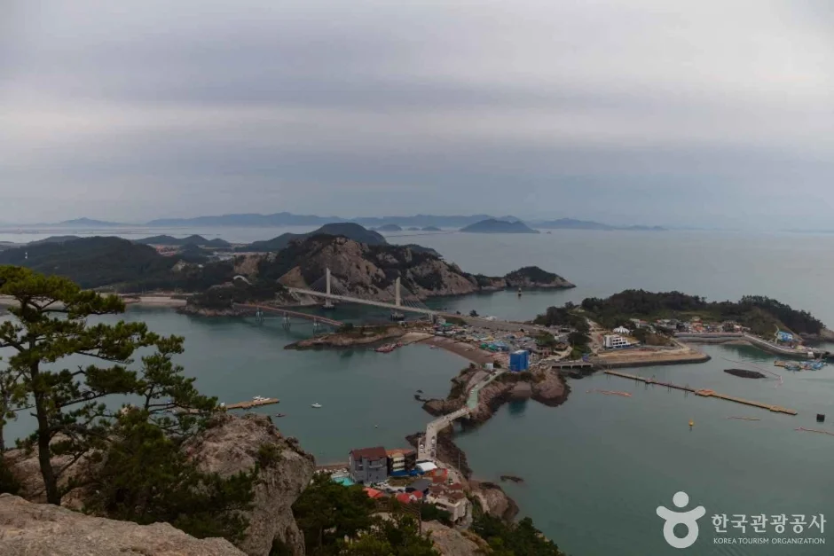
▲ 대장봉 전망대에서 본 풍경. 흐린 날 촬영된 사진으로 보인다 (촬영 시기는 안내되지 않음) ⓒ 한국관광공사 · 공공누리 제3유형(변경금지)
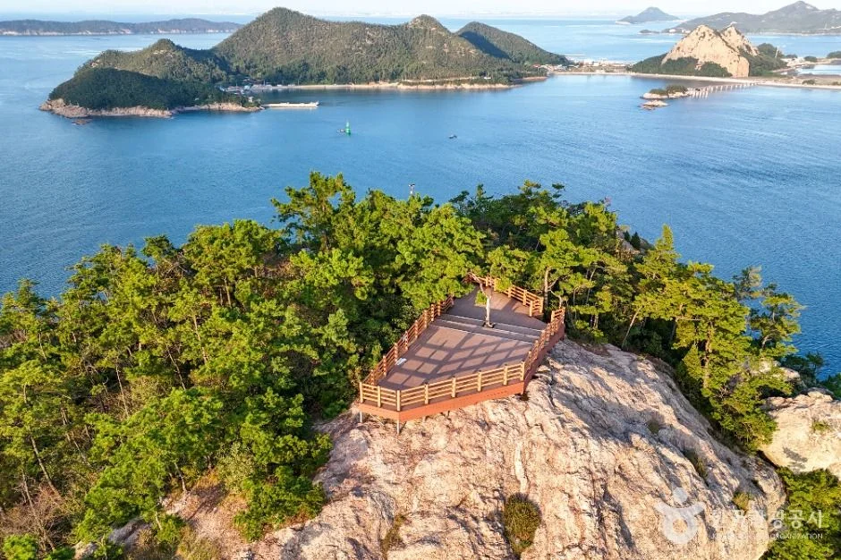
▲ 대장봉 전망대 일대를 내려다본 모습 (촬영 시기는 안내되지 않음) ⓒ 한국관광공사 · 공공누리 제1유형
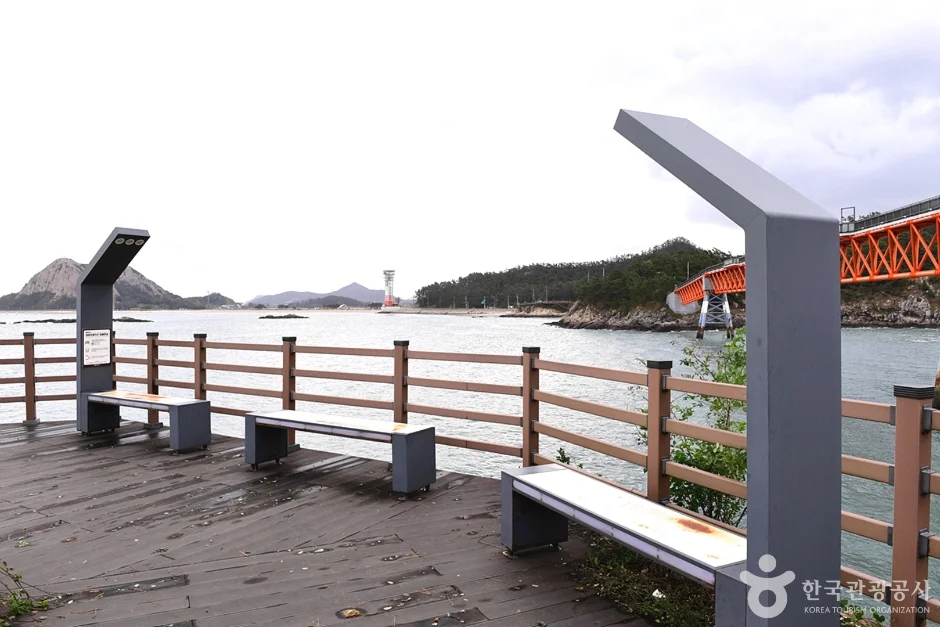
▲ 장자교 스카이워크 위 쉼터. 상시 개방이며 야간에는 LED 경관조명이 켜진다 (촬영 시기는 안내되지 않음) ⓒ 한국관광공사 · 공공누리 제3유형(변경금지)
5. 유람선 — 22,000원, 하루 다섯 번이지만 부정기선
군산 선유도 유람선은 선유2구에서 출항한다. 군산시 안내의 출항 시간은 9:40, 11:00, 13:20, 14:00, 16:00이고, 부정기선이라 당일 상황에 따라 바뀔 수 있다고 적혀 있다. 한국관광공사 관광정보에는 이용 시간이 10:00~17:00로 나와 있어 두 자료가 다르다. 군산시가 유람선 운영 정보를 직접 안내하므로 이 글은 군산시 출항 시각을 기준으로 삼았고, 한국관광공사의 10:00~17:00는 개략적인 이용 시간대로 보인다. 한국관광공사는 연중무휴이되 기상 상황에 따라 출항하지 못할 수도 있다고 적었으니, 출발 전 전화(063-442-8845 또는 1577-6951)로 확인하는 편이 안전하다. 군산시 유람선 안내 바로가기
| 구분 | 내용 |
|---|---|
| 요금 | 대인 22,000원, 소인 11,000원(A~D 모든 코스 동일) |
| 소요 시간 | 1시간 10분 |
| A코스 | 선유2구 출항 후 선유봉, 인어등대, 장자대교, 장자할매바위, 횡경도, 금돈시굴, 신시도, 무녀도를 거쳐 선유2구로 복귀 |
| B~D코스 | B는 횡경도 대신 방축도(독립문바위) 경유, C는 선유1구·물개바위·무녀도·새만금 신항·고군산대교·신시도·닭섬, D는 선유3구·닭섬·신시도·야미도·신치항 경유 |
| 대체 운항 | 기상 등으로 A코스를 갈 수 없으면 B, C, D 코스로 대체 |
| 출항지 | 선유2구 선착장(군산시 옥도면 선유북길 37) |
| 문의 | 063-442-8845 |
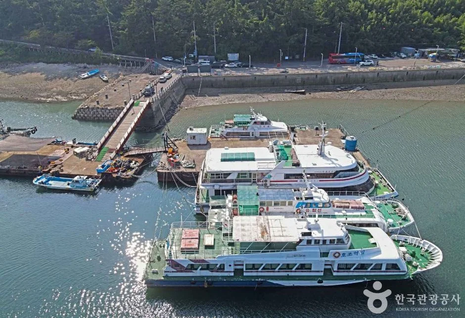
▲ 선착장에 정박한 유람선과 여객선 ⓒ 한국관광공사 · 공공누리 제3유형(변경금지)
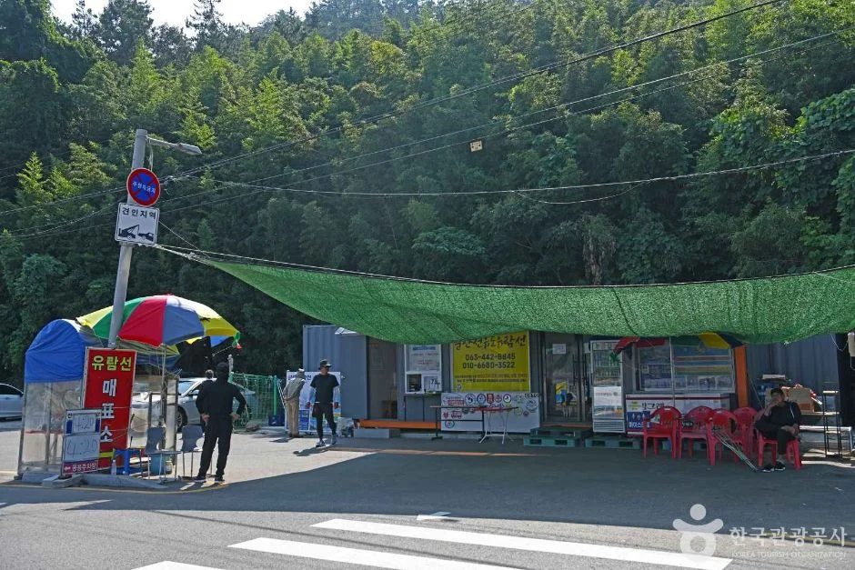
▲ 유람선 선착장 매표소 일대 (촬영 시기는 안내되지 않음) ⓒ 한국관광공사 · 공공누리 제3유형(변경금지)
6. 일출·일몰과 물때 — 낙조는 선유 팔경의 첫 번째
군산시 공식 안내는 선유낙조를 선유 팔경의 첫 번째 명소로 꼽고, 같은 자리에서 보는 일출도 유명하다고 적는다. 일몰·일출 시각 자체는 군산시 페이지에 없어서, 카프리즘이 군산 인근(선유도 쪽) 위도·경도로 천문 계산한 근사값을 아래에 표로 정리했다. 한국천문연구원 자료로 교차 확인하지 못했고, 실제 값과 1~3분 차이가 날 수 있다. 한국천문연구원 바로가기
| 날짜 | 일출 | 일몰 |
|---|---|---|
| 2026-10-17 | 06:42 | 17:58 |
| 2026-11-15 | 07:10 | 17:28 |
| 2026-12-15 | 07:37 | 17:22 |
| 2027-01-15 | 07:44 | 17:42 |
| 2027-02-15 | 07:23 | 18:15 |
가을·겨울에는 해가 5시 반 전후로 지므로 마지막 유람선(16:00)을 타면 낙조를 바다에서 보기 어렵다. 해 질 녘 풍경은 섬 안 전망 포인트 중심으로 계획하고, 일몰 30분 전에는 주차장에서 나갈 준비를 하자. 쥐똥섬 물길은 물때에 따라 열리므로 국립해양조사원 조석 정보를 확인한다. 군산시 날씨·조석정보 바로가기
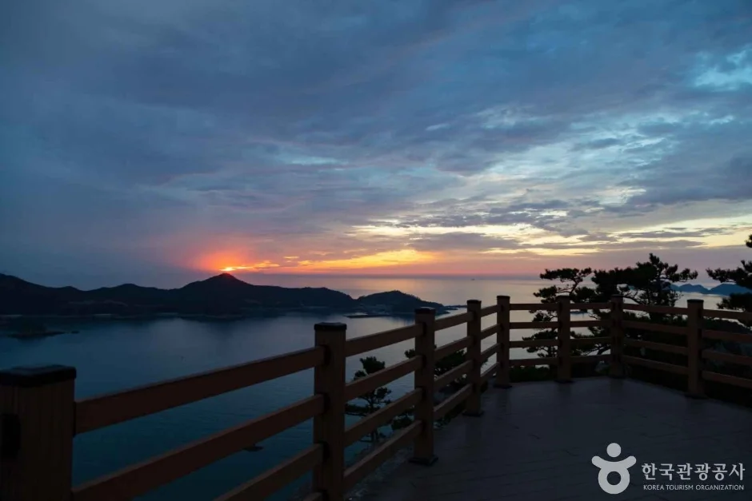
▲ 고군산군도의 낙조. 선유낙조는 선유 팔경 중 첫 번째로 꼽힌다 ⓒ 한국관광공사 · 공공누리 제3유형(변경금지)
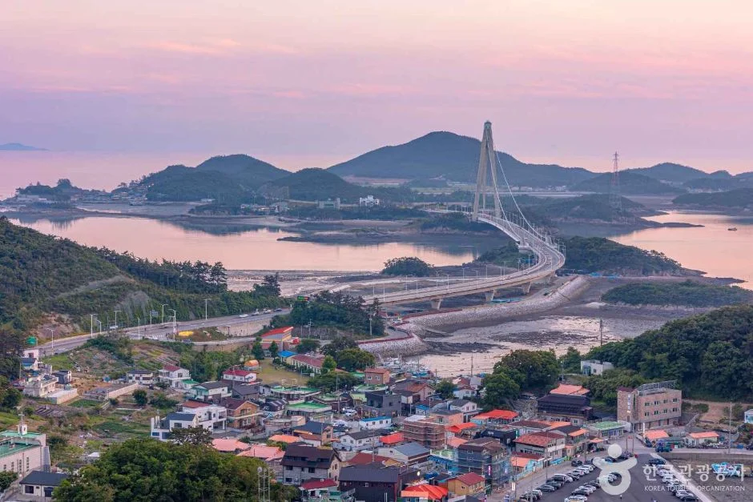
▲ 분홍빛 하늘 아래의 고군산군도 다리와 섬 ⓒ 한국관광공사 · 공공누리 제1유형
7. 겨울·강풍·통제 — 공개된 통제 기준은 확인하지 못했다
이 글을 쓰며 군산시와 한국관광공사 자료에서 고군산군도 연결도로의 겨울철 결빙 통제나 강풍 통제 기준을 찾지 못했다. 그래서 통제 시간이나 기준을 적지 않는다. 확인한 것은 두 가지다. 유람선은 기상 상황에 따라 운항하지 못할 수 있고(한국관광공사), 망주봉은 절벽 구간이 있어 산행 자제를 당부한다(군산시). 한국관광공사는 고군산 섬잇길(해상 인도교 구간)도 기상 상황에 따라 통행이 제한될 수 있다고 안내한다. 이는 자동차 연결도로가 아니라 걷는 길에 대한 안내다.
| 확인할 것 | 연락처·경로 |
|---|---|
| 섬 현지 상황, 주차 | 고군산군도 관광안내소 063-465-5186 |
| 유람선 운항 | 063-442-8845 |
| 여객선(장자도 등) 운항 | 대원종합선기 1644-8774, 장자도항 여객터미널 063-464-4614 |
| 날씨·특보 | 군산시 안내 페이지의 기상 문의 063-442-0364 |
| 조석 정보 | 국립해양조사원 032-885-3827(군산시 안내 페이지 기재) |
겨울에는 바닷바람이 직접 닿고 해가 일찍 지므로 복장과 귀가 시간을 보수적으로 잡는 것이 좋다. 12월 중순에는 일몰이 17시 20분 전후라 오후 4시 이후 섬 안 이동 시간이 짧다. 눈·결빙 시 도로 통제 여부는 공식 자료가 없어 확인하지 못했으니 당일 기상특보와 현지 안내소로 확인하자.
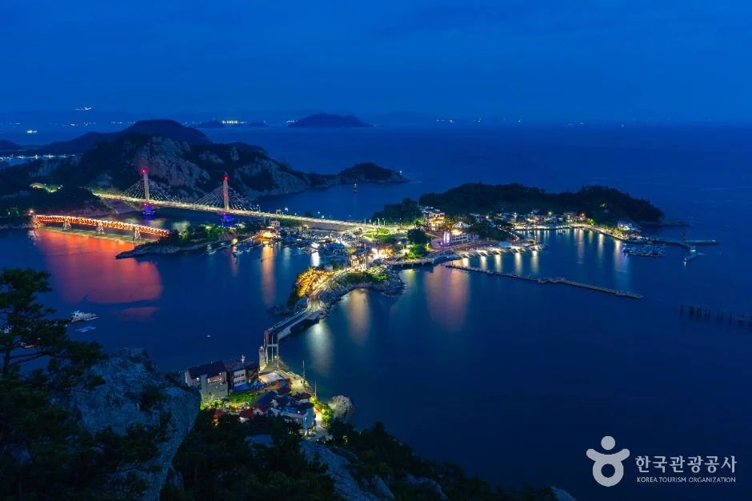
▲ 조명이 켜진 고군산군도의 밤 ⓒ 한국관광공사 · 공공누리 제1유형
8. 새만금방조제와 이어 가기
고군산군도는 새만금방조제 끝 신시도에서 시작되므로, 군산에서 들어가면 방조제 드라이브가 자연스럽게 앞 구간이 된다. 방조제 자체의 길이와 코스는 새만금방조제 33.9km 드라이브 코스 기사에 정리했다. 방조제 통행료는 여행 매체가 무료로 소개하지만 공식 자료로는 확인하지 못했다.
군산 시내 쪽으로 돌아와 이어 가려면 군산 원도심 주차 가이드를 참고하자. 군산시 코스 안내도 1박 2일 코스에서 원도심(근대역사박물관, 초원사진관 등)과 고군산을 묶는다. 변산 방면으로 이어 가는 일정이라면 부안 내소사 기사도 함께 볼 만하다.
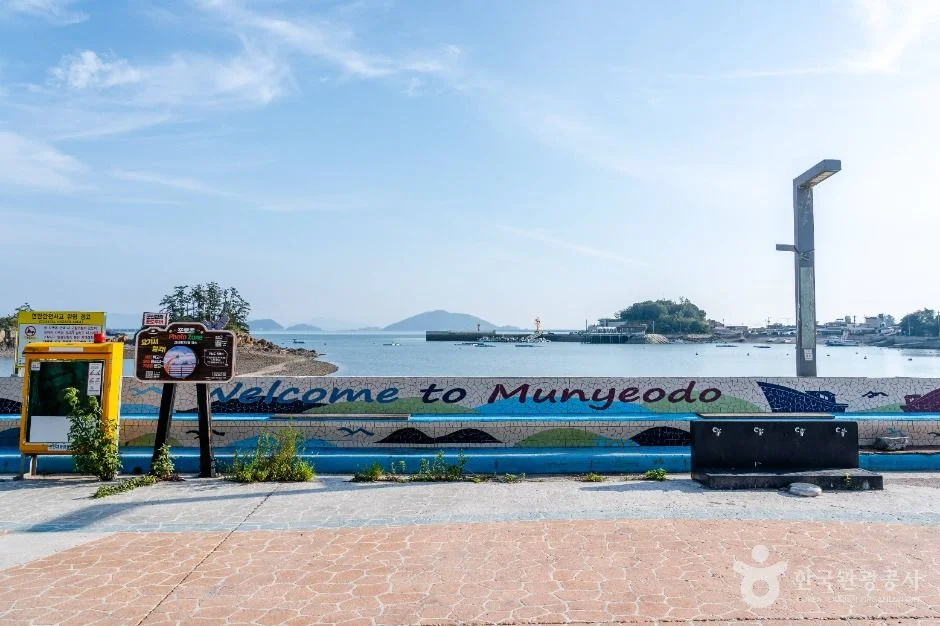
▲ 무녀도 입구. 새만금방조제를 지나 신시도 다음으로 만나는 섬이다 ⓒ 한국관광공사 · 공공누리 제1유형
9. 숙박·식당 — 가격은 미확인, 확인 방법만 정리
숙박과 식당은 군산시 문화관광 사이트의 "음식/숙박/쇼핑" 메뉴(관광지별 음식점, 농어촌민박 등)에 공식 목록이 있다. 업소별 가격과 영업 시간은 이 글에서 확인하지 못해 싣지 않는다. 한국관광공사 관광정보에는 선유도밤바다(식당, 선유도3길 33-4)와 무녀도오토캠핑장(무녀도2길 19)이 등록돼 있지만, 이용 요금은 확인하지 못했다.
섬 안 식당은 주말 점심에 줄이 길어질 수 있다. 군산시 당일 코스가 중식을 포함해 8시간을 잡은 이유도 같은 맥락이다. 예약이 가능한 곳인지 방문 전에 전화로 확인하는 것을 권한다.
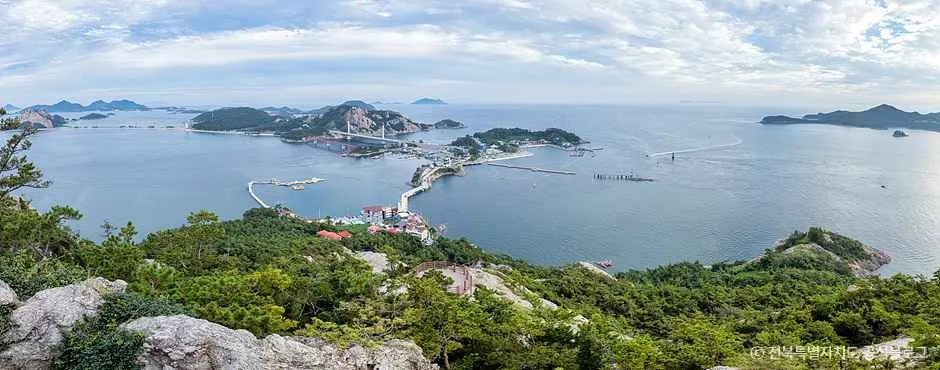
▲ 장자도 마을과 뒤쪽 산 ⓒ 한국관광공사 · 공공누리 제3유형(변경금지)
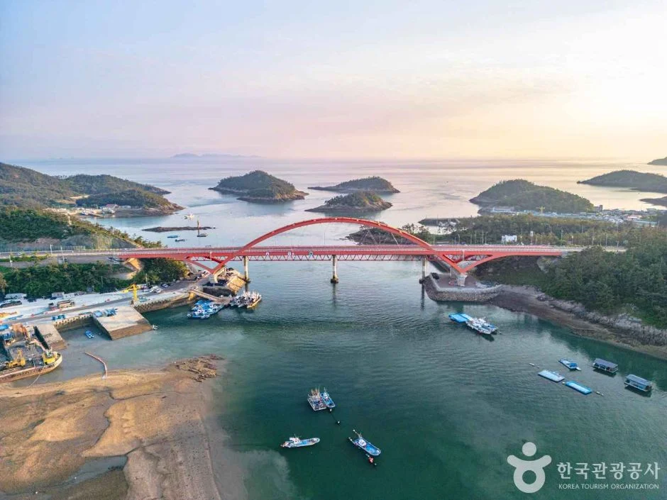
▲ 붉은 아치형 다리가 놓인 고군산군도 해안 ⓒ 한국관광공사 · 공공누리 제1유형
✅ 고군산군도 자차 여행, 가기 전 체크리스트
· 주차: 선유2구 331대·장자도 145대(유료)·신시도 31대(무료), 선유도·장자도 모두 최초 1시간 무료(한국관광공사 안내), 이후 요금은 안내판 확인
· 유람선: 대인 22,000원·1시간 10분, 부정기선이라 당일 전화 확인(063-442-8845)
· 장자교 스카이워크: 연중무휴·상시 개방, 길이 268m
· 망주봉 등반은 위험하니 자제 권고
· 일몰은 10월 17일 기준 17:58경(근사값), 출차 정체 대비
· 겨울 통제·결빙 기준은 공식 확인 못 함, 날씨 특보와 안내소(063-465-5186)로 확인
10. 정리
2026년 10월 17일 기준, 새만금방조제에서 장자도까지 연결도로는 8.77km이고 선유2구 주차장 331대, 장자도 주차장 145대(유료), 유람선은 어른 22,000원(1시간 10분)이다. 선유도 공영주차장은 한국관광공사 안내상 1시간 무료다. 주차를 한 번만 하고 걸어서 도는 동선이 가장 덜 막힌다.
장자도 1시간 이후 주차 요금, 군산시 공식 요금표, 겨울철 통제 기준, 숙박·식당 가격은 공식 자료로 확인하지 못했다. 현장 안내판과 고군산군도 관광안내소(063-465-5186)에서 한 번 더 확인하자.